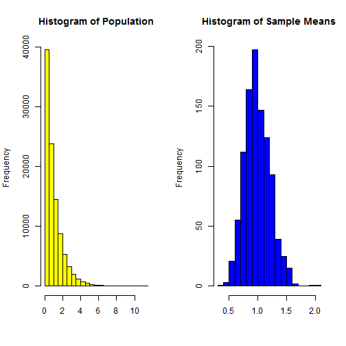

- To demonstrate the Central Limit Theorem empirically
- To show how shiny and slidify can be used
- To have fun!
Setup
- Have RStudio installed
- more ...
- and more ...
Enzo Alda
Lakebolt Research
The variance of the sampling distribution is \(s^2/N\) where \(s^2\) is the variance of the population
twin.plot <- function(P, lambda, S, N, type="grey") {
popl <- rexp(P, lambda);
means <- NULL;
for (i in 1:S) {
x <- sample(popl, N, replace = T)
means <- c(means, mean(x));
}
theme <- themes[themes$type == type, ];
hp <- "Histogram of Population";
hs <- "Histogram of Sample Means";
par(mfrow = c(1,2));
hist(popl, breaks=21, main=hp, xlab="", col=toString(theme$pcol));
hist(means, breaks=21, main=hs, xlab="", col=toString(theme$scol));
}
